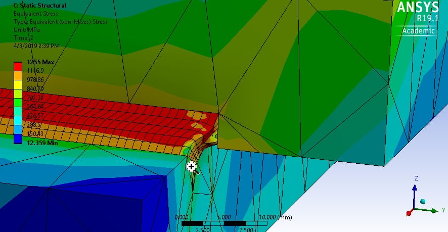
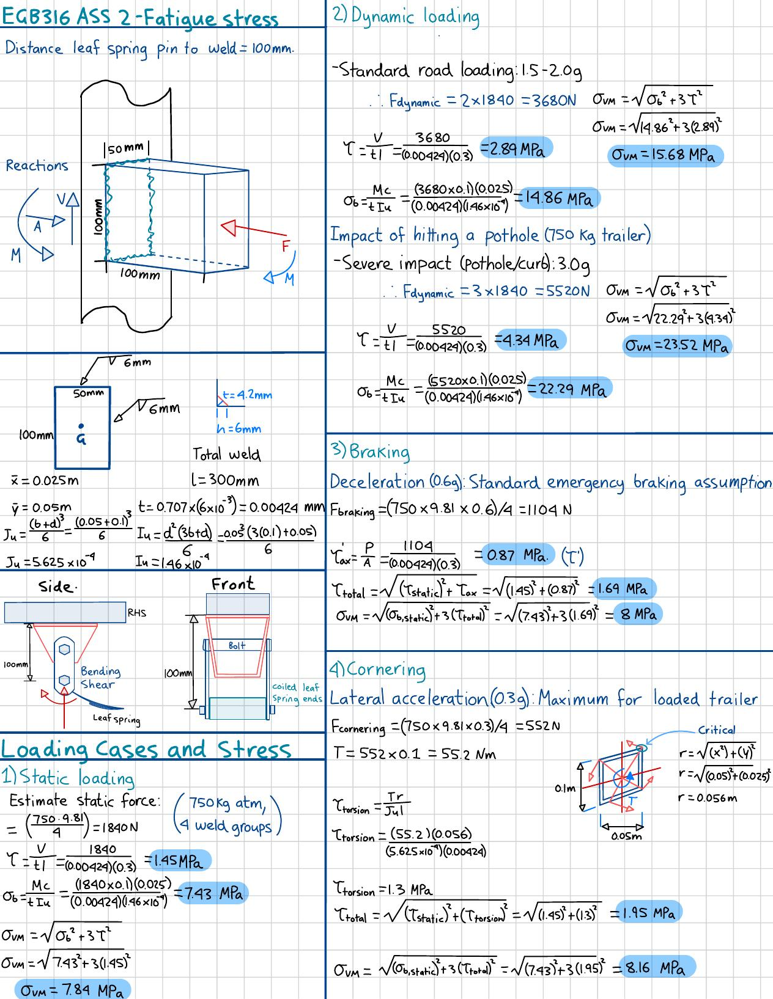
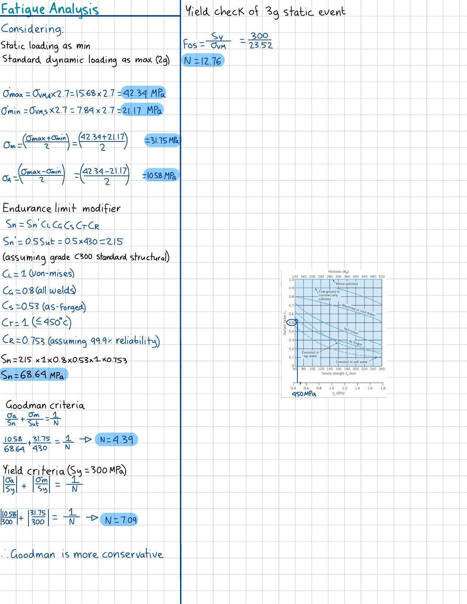

This project is a design audit and fatigue analysis of a leaf spring hanger bracket welded to the chassis rail of a light-duty box trailer. The objective is to determine whether the existing fillet weld is safe under both extreme static loads and long-term cyclic operation.
A conservative 750 kg ATM was established, with four critical load cases defined: static (1g), dynamic pothole (3g), braking (0.6g), and cornering (0.3g). Forces were distributed across four hanger brackets using F=ma principles.
The 100 x 50mm rectangular fillet weld group was fully characterised, including throat area (A), second moment of area (Iu), and polar moment of area (Ju). During the calculation process, an orientation error was identified where width and depth (b and d) were initially swapped in the Iu calculation. This was caught and corrected before proceeding.
Von Mises equivalent stress was calculated for every load case to match the multi-axial stress handling used by ANSYS. The critical load case was the 3g dynamic pothole, producing the highest combined bending and shear stresses on the weld.

Operational cycles were defined as fluctuating between static loading (1g) and standard road loading (2g). The endurance limit was modified using a 99.9% reliability factor (Cr = 0.753), an as-welded surface factor (Cs = 0.53), and a fatigue stress concentration factor Kf = 2.7 for end-of-parallel fillet weld geometry.
Using the Modified Goodman criteria, the fatigue factor of safety was determined at approximately 4.39, confirming infinite life under the defined operational cycle. The yield check under the extreme 3g static event returned a factor of safety of 12.76, well above the failure threshold.
